DePicture
DePicture is an application designed to collect data for exploratory research. The research topic in question is ‘How are different forms of media typically depicted in drawn form?’. The research aims to find out what key concepts are drawn, what correlation there is between different drawings, and if others can correctly identify the original media from just the drawing. This research data could prove to be very useful in certain psychology and art research topics.

The application provides a way in which users can contribute to the exploratory research process. Users can either view the gallery page and see other people’s drawings, or they can participate in the data collection process by either drawing alone or within a specially designed multiplayer game.
I produced:
- The initial idea for the project
- A document for brainstorming gameplay mechanics
- Task flow diagrams
- Storyboard sketches
- High-fidelity sketches
Details of my contributions are outlined below.
Timeline
Humble Beginnings
The process began when I brainstormed several ideas for an application involving the Trove database. This involved using post-it notes and a whiteboard. It was important to consider multiple ideas in order to compare to each other and consider which one is the best to go forward with. The ideas would be written on a post-it note, and these post-it notes would then be stuck on a whiteboard for peer critique. Other people participated in this activity which meant that ideas could be compared with. One of my post-it notes was an idea in which Trove pulls in a picture, a person draws the picture with a digital drawing widget, and the other players try to guess which of the 4 pictures the user saw as a hint to sketch with. A group of 4 was formed on the basis of this idea. These group members expressed enthusiasm for the simplicity and the potential for entertainment with a drawing game. This idea eventually evolved into the basis for the Depicture app.
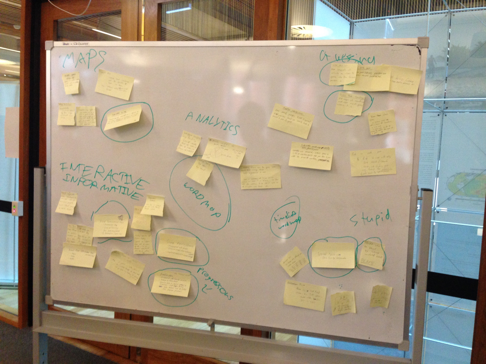The Calm Before the Brainstorm
After we established the idea, the first step was to establish key interactions of the game. I made a document in which key aspects of the game would be decided upon. This had two purposes: to figure out if the idea was even plausible to develop with the limited resources, and to see how detailed the application will need to be in terms of features. This ensured that the idea being pursued is both possible and clear, and also to make sure the other group members understand the idea in which the development will be based upon. Key aspects included screens, gameplay mechanics, and the points system to compliment the game. Methodically mapping out brainstorming ideas forced us to flesh out specific details and to see more clearly how the game might look as a finished product.

Initially, I envisioned the app to be purely a game. As the brainstorming sessions went on, we realised that the game could be used for audio as well as music. Instead of creating another drawing game that mirrors the gameplay of other games such as Pictionary, we wanted to put the application to good use. This would be by turning the game into a data-collecting application for research purposes. The game officially became a research application which aims to find out how listening to audio can change drawing, and if these changes can be noticed. To reflect this change, the application would also feature a 'free draw' screen, which would be a place for creative expression, and a 'gallery' screen where users can see other people's drawing and vote.
Back to Basics
After this change was established, the design of the application began. I was responsible for creating sketches of the interactions, better known as a 'task flow' diagram. This involved laying out all of the interactions the user would make with the application, as well as the various screen that the user will encounter when using the app. These sketches were done in very low fidelity in order to ensure the ability for quick changes and improvements to the task flow.

Next, I applied the same strategy to the storyboards. A storyboard is a single use case of the application. I chose the gameplay as the main interaction to map out, as this will most likely be the most popular use of the application. These are quite similar to the task flows, except that the context of use and step-by-step analysis of a single path of interaction is established. Making the storyboard forced me to figure out what features are missing and if the flow of screens make sense to a typical user. Drawings were quick and rough in order for rapid designing and experimenting with ideas.

Digitised, colourised, and ready to go
After the main interactions were established, draft sketches of the interaction screens were made on the program Sketch. A green colour scheme was chosen for its uniqueness and eye-catching nature. A high importance was placed on the use of white space and minimalism for ease of use.
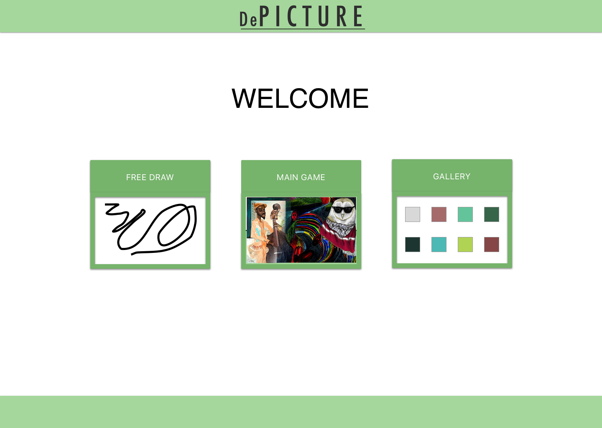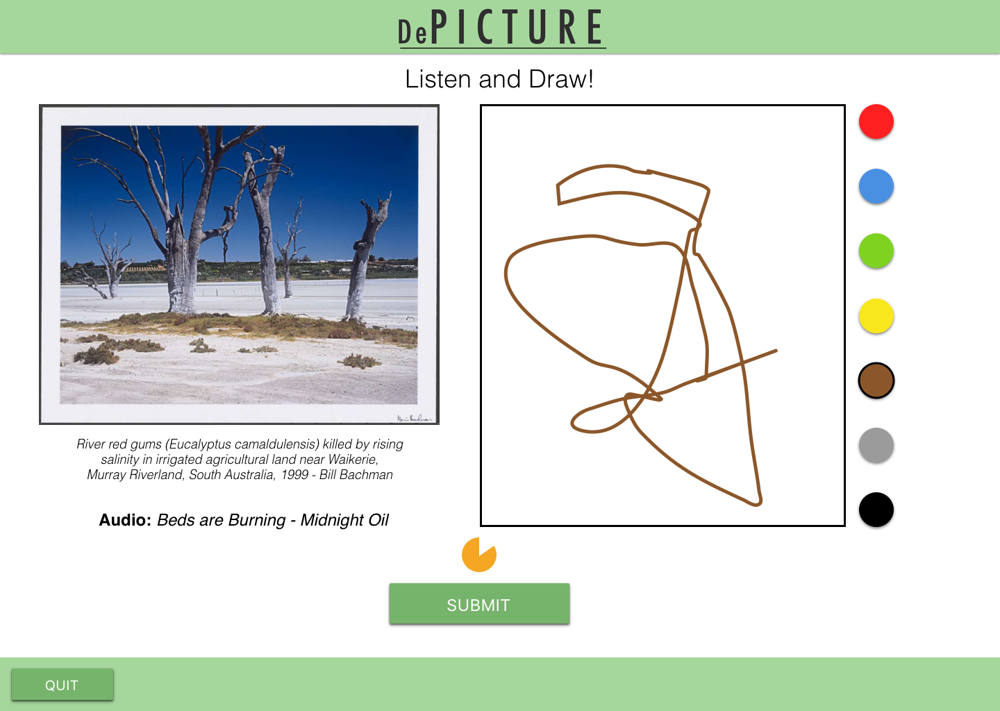
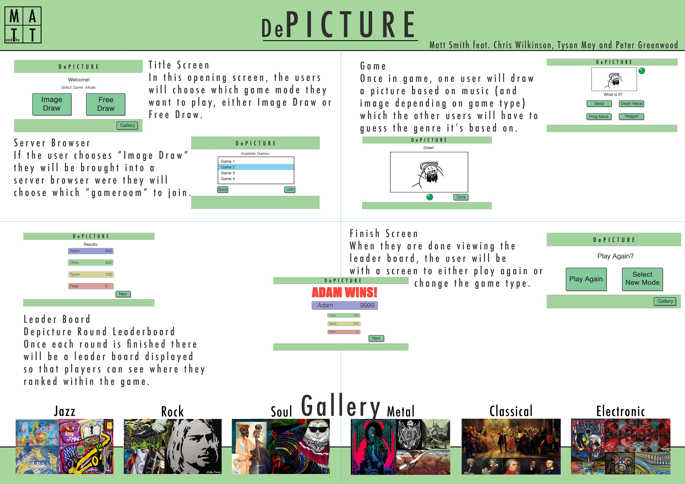
These also formed the basis of the promotional poster.
Reflection
Overall, I believe that this part of the project was a success. This is because the group work delegation worked very well with no major conflict of interest, and that the tasks established at the start of the project were met. Not only was the project successful in progressing the implementation, but I learned a lot about group work and communication. Visual communication was key to coordinating a group to deliver a product, and the communication made the group members feel involved in the process, and ultimately resulted in a better application.
Problems
There were some shortcomings of the project process. 3 of the largest problems are listed below:
I was too impatient
The largest one was in the storyboard and task flow sketches. Initially, I wanted to create storyboards and task flows all digitally. However, this was a huge task to achieve. There were too many screens to be made, and too many details to be decided on too early in the process, such as colour and font type. It wasn't until much closer to the deadline that I realised that creating the charts digitally would not be ideal. I eventually gave up on the digital designs and drew them by hand. The drawings were very rough, and I personally am not proud of the presentation of such designs. While the drawings conveyed what was needed to move on to the next step, I should have started with hand drawing designs early on in the process so I could flesh out ideas as I make them, rather than focus on the tiny details such as colour schemes and button placements.
We did not communicate enough
I established early on that the group should meet at least once per week to discuss what they are doing, and where to go next. Unfortunately, we started to substitute physical meetings with Slack messages. This meant that communication with group members became more distant, and the work to be done was made unclear. For example, a group member volunteered to finish of the poster that the group was working on by filling in the blanks with descriptive text. However, the text used for the title of the poster was used for the body text, making for a very strange looking poster.
This came as a result of a lack of communication. If there was a physical meeting beforehand, the group could have worked on the problem together.
Departmentalisation
A side effect of the lack of communication was what I like to call 'departmentalisation' Early on in the process, each member of the group stated what skills that they might have that would contribute to the project. For example, I wanted to take control of the visual and interaction design of the project. These became what we called 'Primary roles' for the design process. Unfortunately, I became the 'design guy', which implies that I am solely responsible for all design issues, and anyone that wants to help me is not welcome. This meant that I did not ask for help when I needed it, and I was out of the loop on how the other group members were going with their part of the work. This cost me dearly in the sketches, as I needed help trying to establish what interactions will take place and how the app will be used effectively.
Improvements Proposed
The case for 'incremental' designs
If I were to make improvements, I would try out 'incremental' designs. That means I would do extremely rough sketches initially, then build upon each design with more detail. In the project, I started trying to produce highly detailed sketches, which slowed down my design process, and did not allow for me to consider other design options rapidly. If I had thought of a better idea, I would not be inclined to follow it, as I would have already have spent so much time on high-fidelity designs. Starting with low-fidelity designs ensures that the fundamentals of the application and interactions are met first. This would in turn improve the visual designs, as a solid foundation would have been established. Unique ideas would then be easily tested, considered, and discarded. Start small, then go big.
More communication, more satisfaction
The mantra I repeat to myself now is the more communication, the more satisfaction. This was not enough. In retrospect, I would set a hard rule for at least 2 physical meetings per week. That way we are not only keeping up to date with progress, but we are also helping each other on problems that arise. Less communicate on increases the risk for 'departmentalisation', where each person is assigned a 'role', and everyone is too busy with their own role in the project as opposed to seeing how their work fits into the bigger picture. It increases the sense of purpose, and motivates the team to work harder. The more meetings, the better the project will turn out to be at the end.
Cross-pollination with secondary tasks
For the next part of the project, I propose the idea of 'secondary tasks'. This combines the benefit of putting each group member's strengths to good use while minimising the effects of the dreaded 'departmentalisation'. Each group member will have their primary tasks, and the will also have another group member's task of their choice as a 'secondary' task. The group member will supervise and help the other person with their secondary task as their primary task. This means that all group members will have someone that supervises and helps with their work, and can also find out if they are making progress in relation to other group members. Secondary tasks will hold group members accountable, and will create healthy competition.
Depicture Part B
In this part of the project, I produced:
- Collected feedback from presentation
- Conducted a paper prototype test for usability testing
- Designed and helped implement the Minimum Viable Product
- Proposed changes to the design based on paper prototype feedback
Timeline
Concept Feedback
Before any development began, feedback on the concept was needed. To collect feedback, a poster and presentation was developed in order to demonstrate the design and the concept of the application.
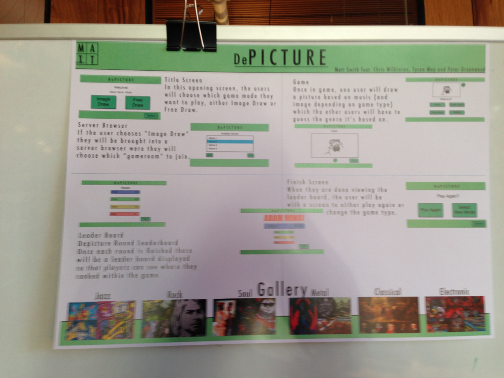This presentation would be presented to a room of around 30 people...
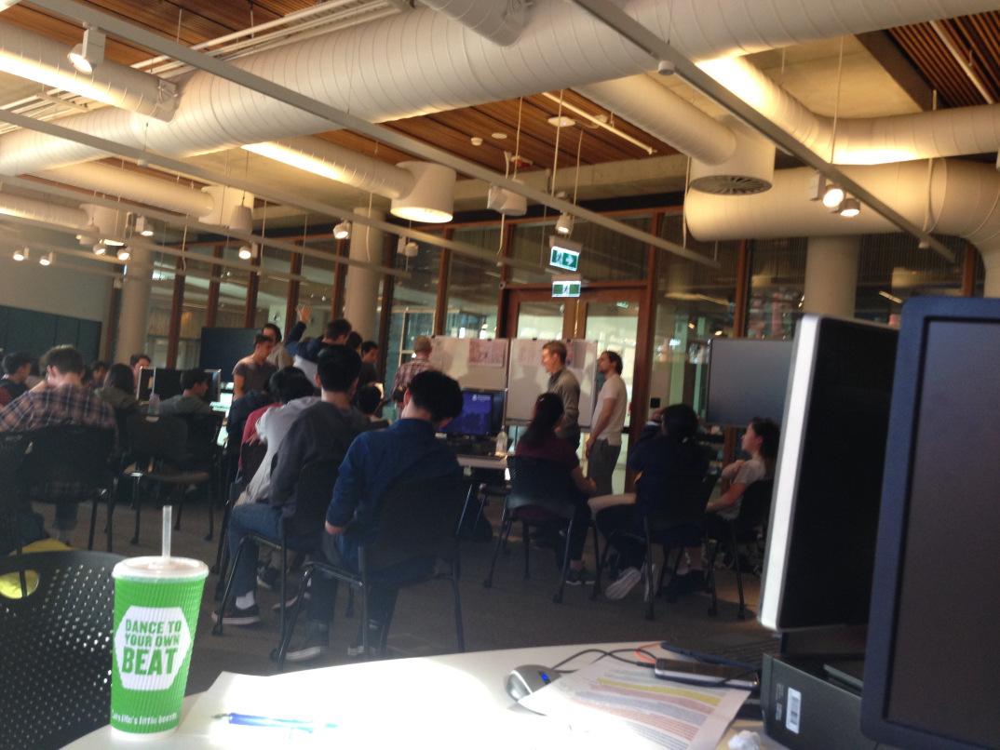...and a group of 4 people would fill in a critique form and hand in to our group after the presentation:

As a whole, the audience reacted positively to the concept. The following feedback was collected following the presentation:
- More clarity on the research goals - One person found that the purpose of the application was quite unclear. It was unclear what kind of data was being collected and what it was being used for.
- Have information on the images pulled - One person suggested adding information on the image underneath the image itself in order to inform the user on what they are drawing.
- Need to consider moderation - Another person was more concerned about the implementation than the design. She stressed the need for a moderation system in which users could report images, audio and drawings in which the user might find inappropriate for an application suitable for all ages. This feedback formed the basis of refining the application concept in future implementations.
Paper Prototype
To test the interactions developed, a usability test was constructed to collected feedback on how users might use the application. A paper prototype was developed in order for interactions to be tested before development began:
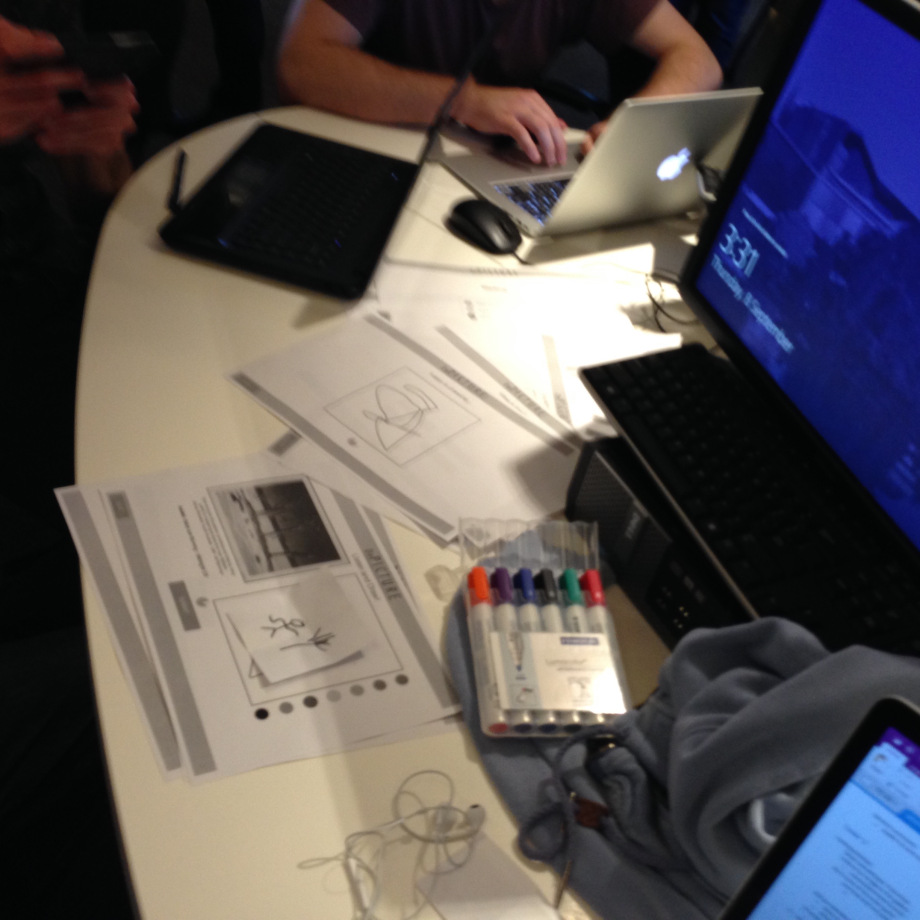Users would interact with the paper prototype like they would with a digital application.

Users would interact with every screen using pre-constructed user journeys, such as:
- Drawing an image in free draw
- Conducted a paper prototype test for usability testing
- Voting on an image in the gallery
- Competing against a friend in competitive play.
Users would follow each user journey while key observations were written down. After the test, users were able to express any thought that they had with the program.
Feedback yielded the following conclusions made about the application:
- Application purpose was not clear - The most important feedback came from the discussion with the user afterwards. Most of the users expressed confusion on how to play the game. The idea of the game is that the user will listen to the music, and use the image as a prompt on what to draw. Users did not know that the image was merely a prompt, rather than an integral part of the application. Users felt like they had to find a correlation between the image and the music, which proved to be very difficult for them. A major overhaul of the main game would be needed to become entertaining and engaging for users.
- Some screens were not clear in their purpose or intended interaction - Many users were left confused in key places like the gallery and the image draw screen to which elements were interactive. For example, users could not figure out where to vote up or down in the gallery screen. Users were found to click on the image instead on the arrows on the screen shown below:
- Users tended to only use one colour to draw - Despite being given the option of multiple colours, users tended to stick to one colour for drawing an image. This is most likely for simplicity reasons, due to the fact that there is a time limit on the game, users were not inclined to waste time selecting colours to draw with.
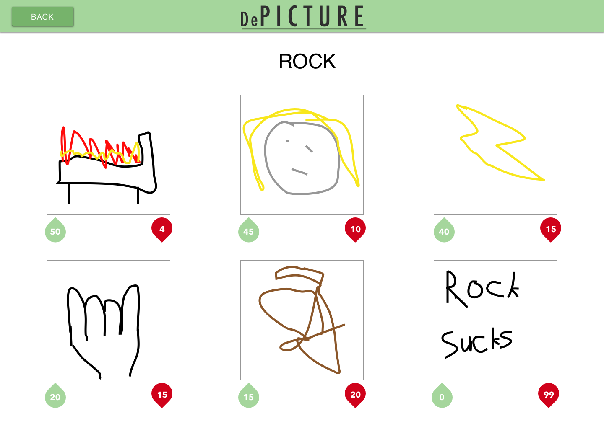
Changes Proposed
In light of the new feedback, major changes were needed to be made to the concept to reflect the feedback from both the presentation and the usability test:
Change gallery screen
The gallery screen design was overhauled in order for the voting system to be made more clear. Since users generally pressed the button to vote, this interaction was embraced by embedding the voting system with the image:
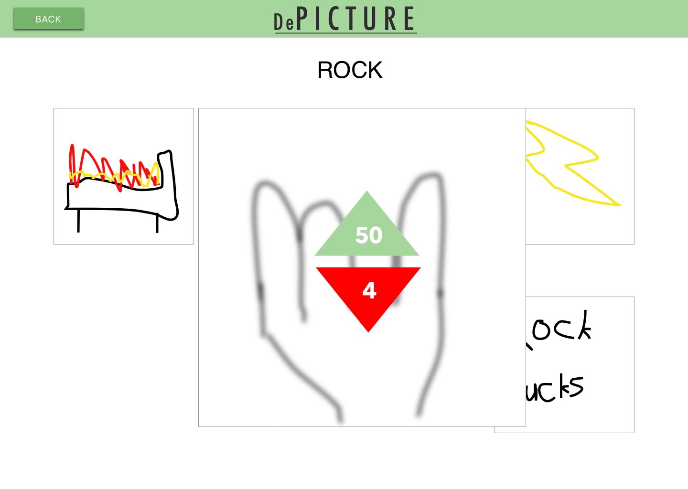As a further improvement, the image would zoom to the center of the screen for maximum visibility.
Context-aware hints

This change is in response to some interactions and screens not being fully clear to the user. At the top of any screen will be a yellow circle with a question mark inside. Clicking on the circle will reveal a helpful guide on the purpose and the interaction of each screen. The hint box will only show what is relevant to the screen that would be currently displayed.
Less constraint on the game functionality
Users found the time constraint to be either restrictive to creativity or pointless for the game functionality. Originally, the image draw would last around 15 seconds. Instead, the timer will be extended to one minute, thereby freeing up the user to put more detail into their drawings and therefore increasing the creative expression. The increase in the time limit will also ensure that drawings made in game are comparable to the ones drawn in Free Draw.
Minimum viable product was developed to reflect these changes. I implemented the design of the MVP. Implemented just the game draw stage to demonstrate that both images and audio work. The Trove and canvas implementation were done by other group members.
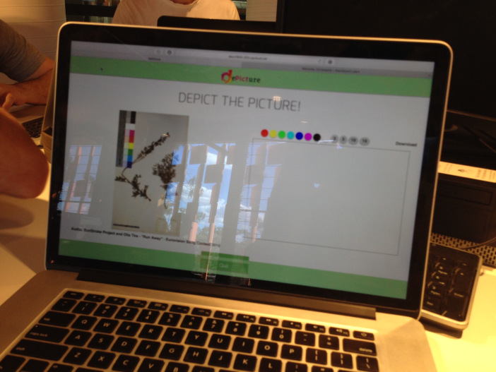Reflection
This part of the project was not without its' share of successes and failures. The project was a success in the sense that feedback was vital to creating proposed changes to the design. We have a clear vision going forward in what the project might look like and operate as the final product. The technique to collect feedback was successful and provided a consensus to how the project should move going forward. I realised that testing should be at the forefront of the design process, and not just be a step in the process as a means to validate the current designs. More often than not, there would be something that does not come across to the user in the communication of the design, and user testing makes this apparent.
To put the same thing in a negative light, the project was a failure in the sense that major changes were needed to be made in order for users to feel comfortable with the application. This came about because there was not enough user testing before the implementation of the product was done. The group assumed what the user would understand and not understand and did not stop to ask users to try out the application. Testing made throughout the design process would ensure that issues with the application would be made note of immediately, rather than when the application is mostly implemented, and would require major backtracking to suit user needs.
On the group work side, the project was successful in that we all successfully implemented the product that was set out to be done. Communication was especially good, as we all attended meetings and used techniques such as using a whiteboard to communicate design ideas. This ensured that everyone was up to date on each other's progress, and actively understood their contribution to the project.
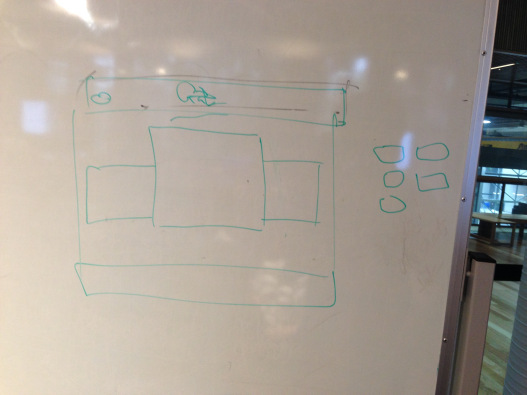
Unfortunately, the planning of future tasks was where the group fell short. My idea of 'secondary tasks', where group members would help out another group member was not successful. People focused on primary tasks, and disregarded the secondary task. Group members including myself helped out because someone needed it, rather than because it was part of their assigned task. In hindsight, this is more natural to group members than boxing them into certain roles. It was hoped that it would take the stress off each group member by letting them focus on certain tasks, but this did not turn out to be the case.
Furthermore, planning of the next phase was not detailed. The group had previously constructed a project plan to guide the way in which the project implementation is approached. The following is an example of the project plan for the next part of the project:
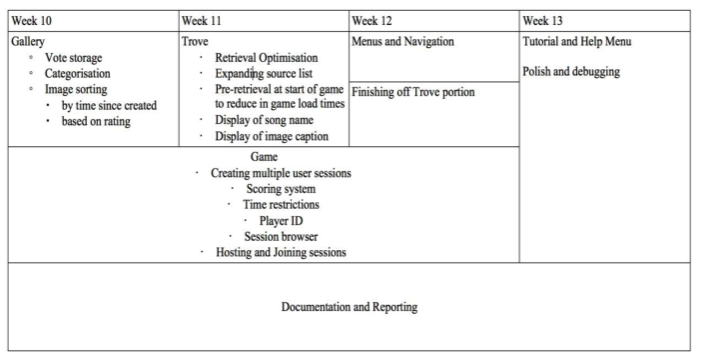However, the plan became disregarded almost immediately as new problems and issues came about, which changed the schedule in which tasks would be done. Some group members did not even see the plan, and therefore did not follow the plan at all. To make matters worse, there was no stated way in the planning in how to handle unexpected issues or changes to the schedule. As a result, the plan was difficult to follow when we deviated from the plan even in the slightest. The plan constructed eventually became useless for the project process, which made for a very messy and unscheduled development phase.
Improvements Proposed
In light of the problems encountered, the following improvements have been suggested to the project process:
- Conduct usability testing throughout the project - Usability testing has proven to be vitally important to the design process. In hindsight, I would conduct usability tests throughout the design process, rather than for just one stage of the project. Doing usability tests early ensure that problems can be addressed before they are too costly in resources to fix. Doing usability tests later in the project ensure that the incremental changes along the way to not impact on the usability aspect of the project. Usability tests to not have to be as detailed as the one conducted in this project, but it does need to be consistent and frequent throughout the project schedule. Furthermore, these usability tests will feature more quantitative data in order for usability test can be accurately compared and contrasted with each other.
- Provide a more comprehensive project plan - I would implement a project plan that would be more detailed in manner, and more flexible to changing circumstances. This would ensure that there is no error for confusion with what was to be achieved, and that group members would be more inclined to follow the plan if it reflected the context in which what was already completed and to be completed. I would achieve this by constructing the plan will all group members present at a meeting, and ensure that everyone has seen and will agree to the new plan. This plan will be divided by week, just like plan above. I would revisit the plan every weekly meeting and ask what progress has been made since last week. If significant progress has been made, I will move some tasks forward. If there are still lingering issues in the way, then I will move tasks back or possible reorganise the plan. This would also provide a platform in which group members can tell the group how much progress they are making and what issues need to be addressed before further progress can be made.
- Be more open to changing project management strategies - Now that I have accepted that circumstances in the project is more likely to rapidly change than not, I will be more open to the way in which projects are managed and developed. For example, when I could see that the project plan was not being followed, I should address the problem immediately and look into why people are not following the plan. This is much more effective than hoping that the group members will follow the plan eventually, which never happened. Being more open to changes ensures that projects can get back on track even in the light of unexpected issues to challenges along the way.
Depicture Part C
In this part of the project, I produced:
- The design and layout of the final product under HTML and CSS
- Usability tests of an interactive prototype
- A demonstration of the application
- A document outlining key features, processes and design decisions of the application
Timeline
The project up to this point was demonstrated to an audience. Various questions were asked about what features were most important to users. The following feedback was generated from this demonstration:
- The game part of the application is the most compelling element within the application - Audience members felt that the only reason they would use the application in the first place is because of the competitive gameplay. In response to this, the priority of development was shifted from the 'free draw' mode to the competitive game mode.
- Username identification is preferred, especially within competitive gameplay - Audience members expressed a desire to have unique usernames when playing against each other, rather than play anonymously. This feedback was accepted, but it was concluded that users just want to a way to identify each other, and a temporary game handle should be sufficient to fill the needs of the users.
- A dedicated "how to play" section would be helpful for learning how to play - Audience members expressed enthusiasm for a tutorial screen separate from the games. This feedback was rejected, because a dedicated tutorial screen would be too detached from the game, while being too detailed for someone who wants to figure out how to use a single element of the application. Instead, the contextually-aware help button remained as part of the design.
A high-fidelity prototype was developed out of the Minimum Viable Product to test the user's response to key interactions and visual elements. Non-essential design elements such as images and help screens were left to a later date in the interest of developing a complete prototype for the usability test.

A usability test was conducted with 5 users to collect feedback on the concept, and key interactions with the application. This was conducted with the same procedure as the paper prototype, in order to provide consistent and comparable feedback to previous iterations.

Users had very negative impressions of the application. Users were even more confused on the purpose of the application. The interactions were clear, but the game led people to be confused on why the game would be fun or entertaining. This is because users were prompted with both audio and an image from Trove, which meant that users were confused on which one they should draw. The idea was that users would listen to the audio, and use the image as a prompt to draw something, but users felt like they had to draw both the image and the audio into one drawing. This felt very challenging to do for the users. Furthermore, users found guessing the genre of a drawing to be very difficult and unfair. This combination of user feedback led the group to conclude that users were not very enthusiastic about the application's concept, and a change was needed to make the game more enjoyable and appealing.
After the usability tests, a major overhaul of the mechanics of the game were made. The music and images in "Free Draw" were placed into their own game modes "Music Draw" and "Free Draw" respectively. This meant that the drawing prompts were greatly simplified and the media source could be isolated from the other source when doing research analysis.
It was also decided that the focus would be taken away from genres and towards individual media sources. Users would guess the drawings not by genre, but by the original source. They would be prompted with 4 options: the correct answer, and three other randomly generated answers. The gallery page was also merged into one page, as the genre tags were rendered meaningless for the user experience.
An alternative colour scheme was proposed by other group member, but the design was rejected because of the large deviation from the tested design, and some technical issues that were present in the proposed design and not the original design, such as misaligned buttons:
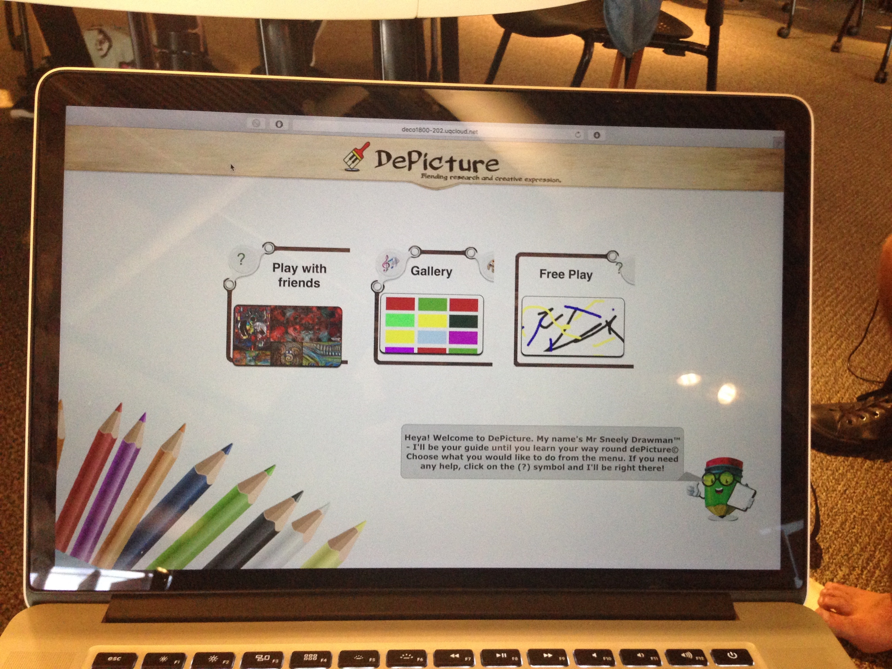
The high-fidelity prototype became the basis for the final product. I was responsible for fixing scaling issues with the application. There were compatibility issues with different screen sizes and form factors. Various CSS decisions were made such as giving the height and width of elements fixed values, rather than values which dynamically change for each screen size, and adjusting margins so that elements stay in the middle of the screen on every screen size.

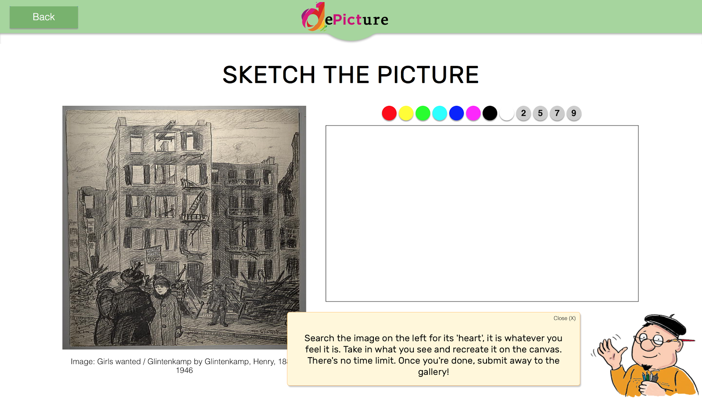
The final product was demonstrated at a trade show alongside other applications. This would be chance to market the application and get crucial feedback on how appealing the concept and application are.

I prepared a 2-minute speech demonstrating what the application is and how it works. There were a few last-minute bugs that were apparent in the program, but they were left alone as there was no time left, and the demonstration was the most important part, rather than bug fixing.
Users expressed enthusiasm for the game, especially for the fact that digital pen input devices could be used to compete against friends in-game. Although not every feature of the application was fully functional, users were entertained by playing against each other and drawing pictures based on randomised images and music. The lack or purpose and clarity of the application were shown to be diminished greatly since the last usability test.
After the trade show, any remaining bugs in the program were fixed by other group members, while I helped produce a document outlining the purpose of the application, the design process, and an overview of every feature:

Reflection
Overall, I believe the development was a success for these reasons:
- Strong communication of ideas between group members - Regular meetings meant that each group member was communicating clearly newly proposed ideas. The whiteboard was a novel way in bringing forward new ideas:
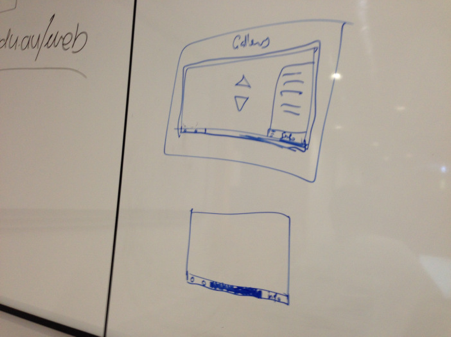
This meant that new ideas proposed were clearly understood and correctly implemented. This was one of the main reasons why the design succeeded in its execution.
- The proposed design was fully implemented - The original design proposed was implemented to its' full extent, with no compromises on any part of the design. Changes were made due to usability issues, but this did not impede on the overall look and feel of the application.
Problems
Despite these success, some problems were faced in both the design process and the project development:
- No clarity on the task roles of each individual group member - This was apparent when the alternative design was proposed by the other group member. The design proposed was fully implemented, to which I felt like the time being spent on new designs could have been spent fixing technical issues with the application. The group member made it clear that he did not like the minimal design of the application, and felt like that some white space in the application needed to be filled with some visual element.
The problem was that both myself and another group member were assigned the same role of designing the website. We were not coordinating or communicating with each other to ensure that tasks are being addressed and work made by one group member is not being 'written over' by another group member. To solve this, I made a 'to-do list' of tasks that were to be completed. This meant that group members could see what was completed, and what was yet to be completed anywhere in the development process. The document was made too late to be used to the full potential.
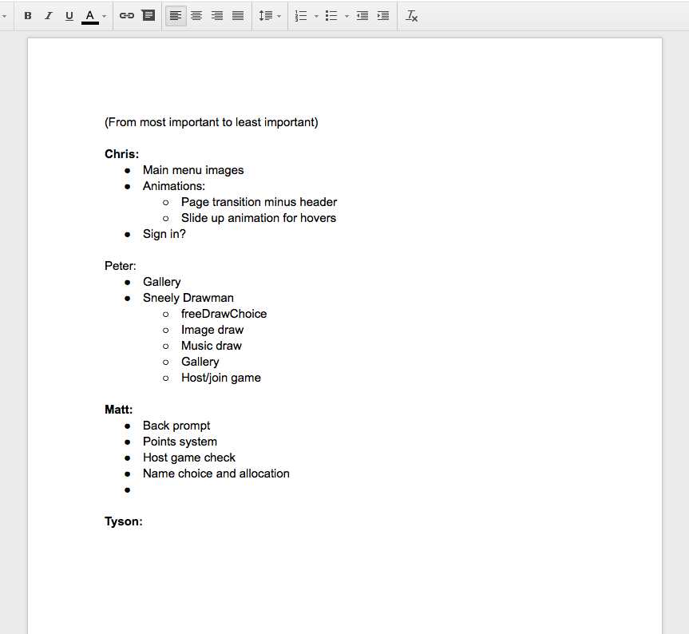The to-do list document in Google Docs form
- No preparation for compatibility or scaling issues - The development process did not account for compatibility issues that would arise with different screen sizes, browsers, and form factors. As a result, each group member had a different idea to what extent the application should be compatible with different devices. Some group members thought that the application should be compatible with tablet and phone devices, and any desktop screen size. I however thought that it was only important to account for most modern desktop screen sizes. This led to wasted effort in trying to develop the application such that it was compatible for all devices, which is a very challenging task. Eventually, I let the group know that we should not get too carried away with compatibility and just focus on getting key functionality done. Group members shifted their focus away from compatibility, and towards fixing functionality. Again, it was too late in the design process for the full potential of this strategy to be realised.
Improvements
The following improvements have been suggested for future projects:
- Perform more research and investigation to target users and devices - Early on in the design process, perform some research and investigation to who might use such an application. This is important not only to discover what unique needs users might have, but also which devices these users might use. It is important for the application to focus on the primary use case that the application would be in. For example, if the application is marketed towards university students, research should be conducted on what university students value in an application, as well as what online devices university students typically use. This means that the application will be more focused in its purpose and market, and therefore increase adoption rate and success of the final implementation.
- Clearly communicate task roles, and keep a log of tasks - In the project planning phase, group members need to be fully aware of their roles in the project, what tasks they are required to undertake, and what tasks are being done by other group members. To do this, a document will be made outlining all of the roles of each individual group member. The more detail in this document, the less likely there is to be confusion over which tasks are being dealt with and need to be addressed, which impede on overall project progress. Another document will be produced to keep track of which tasks are allocated, completed, and soon to be completed. This will be in similar nature to the one shown above.
- Leave more time at the end for new issues that might arise - The project plan was made in the assumption that no major issues may arise between then and the final day. There were a few issues that arose in the last 48 hours of the project, meant that the last moments of the development process were stressful, and exhausting. In future project plans, at least 3 days before the deadline will be left free for fixing of any major or minor issues that might arise in the project. If there are no issues left with the application, then the time will be spent polishing the design and functionality of all the existing features and elements of the project.